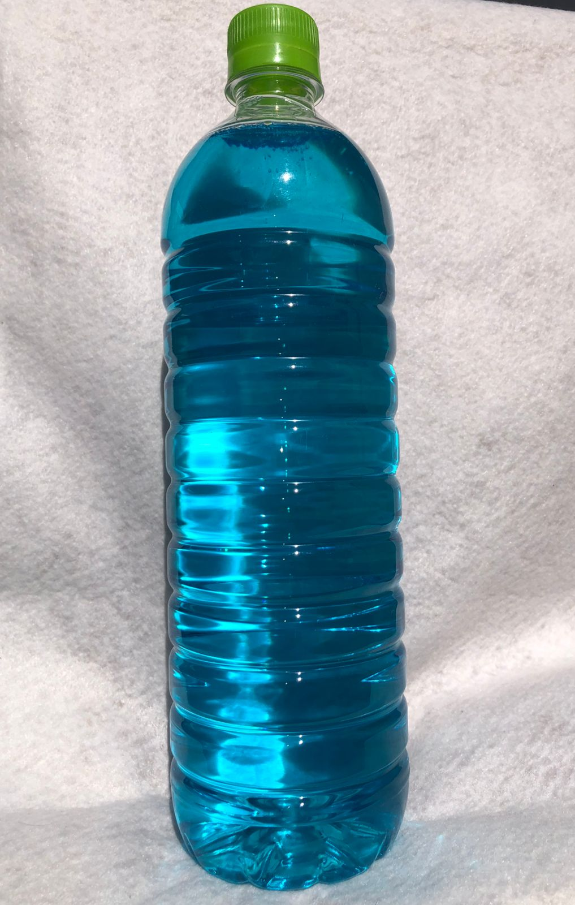
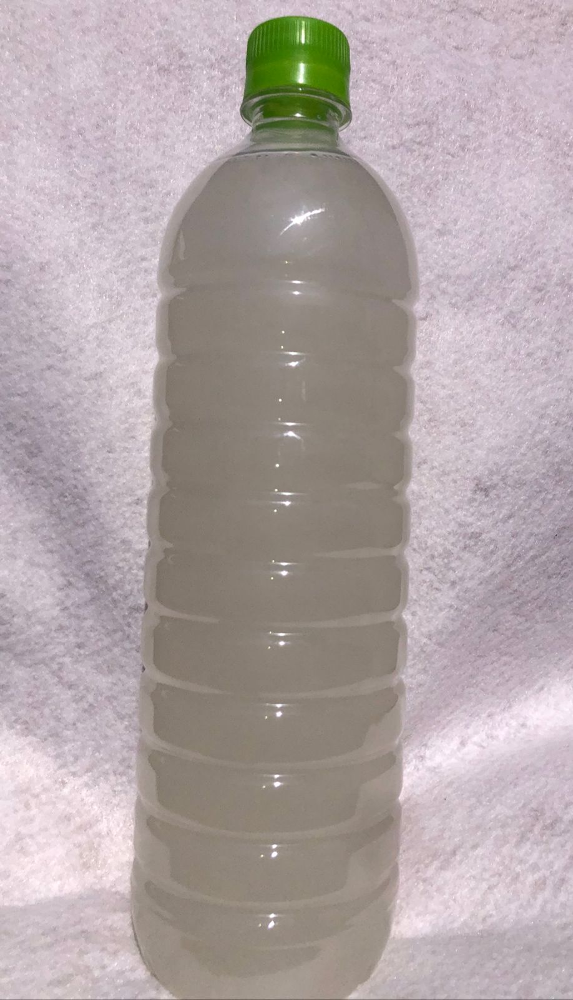
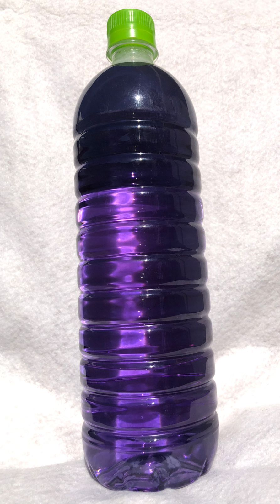
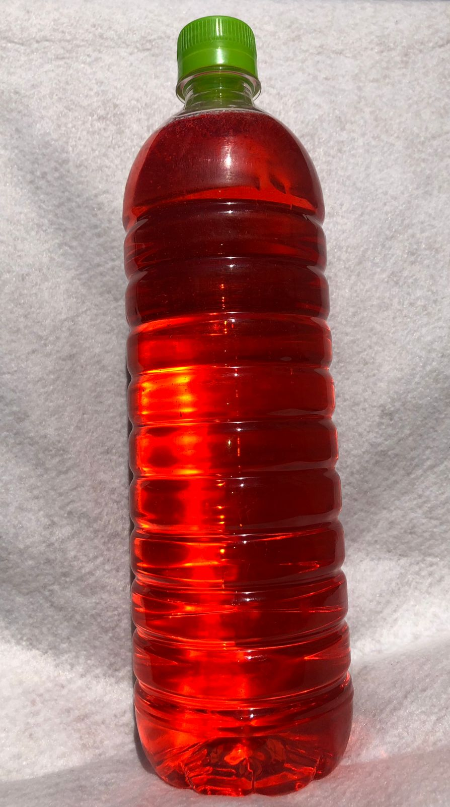

Detergentes Líquidos Ecológicos y de Calidad
En MICHRAN, buscamos ser líderes en la industria de detergentes líquidos, ofreciendo productos sostenibles, eficientes y accesibles que cuiden el medio ambiente y mejoren la calidad de vida de nuestros clientes.

Detergente líquido MICHRAN: limpia a fondo, elimina grasa y deja un aroma fresco duradero. Ideal para ropa blanca y de color, sin necesidad de suavizante.

Blanqueador MICHRAN: elimina manchas difíciles, cuida fibras delicadas y deja tus prendas blancas brillantes e impecables.
Luna de MICHRAN: multiusos que limpia, desinfecta y deja un aroma fresco. Ideal para pisos, ventanas y más, con un brillo y frescura instantáneos.

Nórdico de MICHRAN: multiusos que limpia, desinfecta y deja un toque de frescura duradera. Perfecto para pisos, ventanas y cualquier superficie.

Shampoo de manos MICHRAN: suavidad extrema y aroma fresco de kiwi y sandía que dura horas. Limpieza y frescura en cada lavado.
Shampoo de manos MICHRAN: suavidad extrema y aroma fresco de kiwi y sandía que dura horas. Limpieza y frescura en cada lavado.
¡Queremos saber de ti! Síguenos en nuestras redes sociales o envíanos un mensaje.